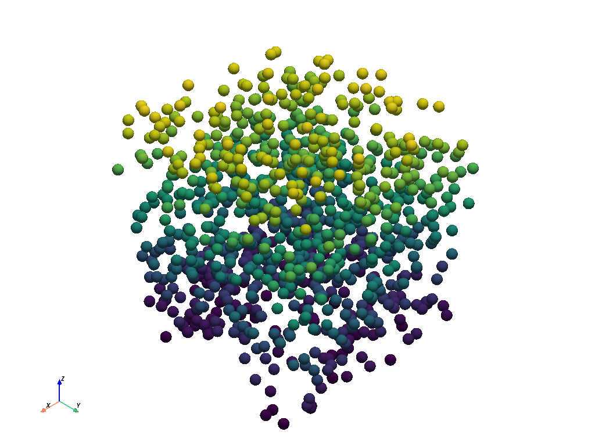

Note
Click here to download the full example code
Plotting Point Clouds#
This example shows you how to plot point clouds using PyVista using both the
'point' and 'point_gaussian' styles.
import numpy as np
import pyvista as pv
from pyvista import examples
Compare the Plotting methods#
First, let’s create a sample point cloud using numpy.random.random().
rng = np.random.default_rng()
points = rng.random((1000, 3))
points
array([[0.61289333, 0.04267485, 0.43982303],
[0.52474072, 0.90077003, 0.63292825],
[0.39211101, 0.36925928, 0.29738774],
...,
[0.1122618 , 0.45791353, 0.8676925 ],
[0.54807168, 0.50347063, 0.79234513],
[0.10433153, 0.30153001, 0.65248682]])
Basic Plot#
We can simply plot this point cloud using the convenience pyvista.plot()
function.
pv.plot(points)
Plot with Scalars#
That’s quite boring, so let’s spice things up by adding color. We can either use a single scalar to plot the points. For example, the z coordinates.
For fun, let’s also render the points as spheres.
Plot with RGBA#
Alternatively, we can color the point cloud using an RGBA array. This has
been normalized from (0, 1), but we could have also used a numpy.uint8
array from 0-255.
Point Cloud Plot Styles#
PyVista supports the 'point_gaussian' style, which renders points as
individual soft sprites. You have the option of displaying these as tight
“spheres” using render_points_as_spheres=True (default), or disabling it
to create softer points at the expense of render performance.
Here’s the basic plot again, but with the style as 'points_gaussian':
pv.plot(points, style='points_gaussian', opacity=0.5, point_size=15)
Here’s a plotter with four combinations of the options side-by-side so you can see for yourself the different options available when plotting these points. PyVista tries to achieve sensible defaults, but should you find these insufficient for your needs, feel free to play around with the various options and find something that works for you.
pl = pv.Plotter(shape=(2, 2))
# Standard points
actor = pl.add_points(
points,
style='points',
emissive=False,
scalars=rgba,
rgba=True,
point_size=10,
ambient=0.7,
)
pl.add_text('"points" not as spheres')
# Gaussian points
pl.subplot(0, 1)
actor = pl.add_points(
points,
render_points_as_spheres=False,
style='points_gaussian',
emissive=False,
scalars=rgba,
rgba=True,
opacity=0.99,
point_size=10,
ambient=1.0,
)
pl.add_text('"points_gaussian" not as spheres\nemissive=False')
# Gaussian points with emissive=True
pl.subplot(1, 0)
actor = pl.add_points(
points,
render_points_as_spheres=False,
style='points_gaussian',
emissive=True,
scalars=rgba,
rgba=True,
# opacity=0.999999, # does not work and _must_ be 1.0
point_size=10,
)
pl.add_text('"points_gaussian" not as spheres\nemissive=True')
# Gaussian points with emissive=True
pl.subplot(1, 1)
actor = pl.add_points(
points,
style='points_gaussian',
render_points_as_spheres=True,
scalars=rgba,
rgba=True,
point_size=10,
)
pl.add_text('"points_gaussian" as spheres')
pl.background_color = 'k'
pl.link_views()
# pl.reset_camera()
pl.camera_position = 'xy'
pl.camera.zoom(1.2)
pl.show()
Orbit a Point Cloud#
Generate a plot orbiting around a point cloud. Color based on the distance from the center of the cloud.
cloud = examples.download_cloud_dark_matter()
scalars = np.linalg.norm(cloud.points - cloud.center, axis=1)
pl = pv.Plotter(off_screen=True)
pl.add_mesh(
cloud,
style='points_gaussian',
color='#fff7c2',
scalars=scalars,
opacity=0.25,
point_size=4.0,
show_scalar_bar=False,
)
pl.background_color = 'k'
pl.show(auto_close=False)
path = pl.generate_orbital_path(n_points=36, shift=cloud.length, factor=3.0)
pl.open_gif("orbit_cloud.gif")
pl.orbit_on_path(path, write_frames=True)
pl.close()
Total running time of the script: ( 0 minutes 3.567 seconds)